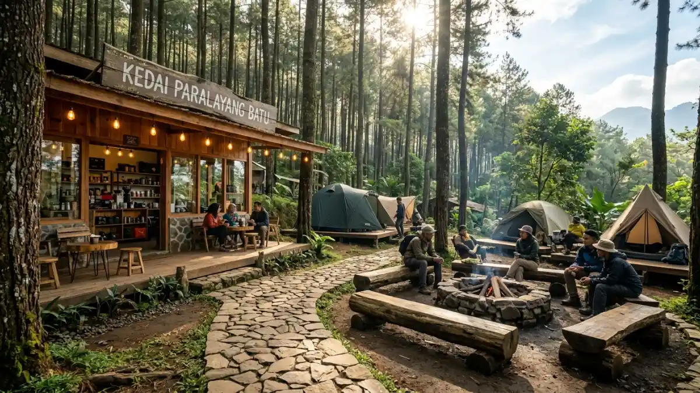

Panorama camping paralayang Batu dengan pemandangan pegunungan yang memukau — destinasi wisata alam terpadu di Gunung Banyak, Kota Batu.
Panorama camping paralayang Batu dengan pemandangan pegunungan yang memukau — destinasi wisata alam terpadu di Gunung Banyak, Kota Batu.
Tempat camping paralayang Batu berpusat di kawasan Gunung Banyak, Kota Batu, menawarkan panorama pegunungan dan spot takeoff paralayang dalam satu kawasan wisata alam terpadu.
- Apa Itu Tempat Camping Paralayang di Batu?
- Di Mana Lokasi Tempat Camping Paralayang Batu?
- Fasilitas Apa Saja yang Tersedia di Tempat Camping Paralayang Batu?
- Berapa Estimasi Biaya Camping di Area Paralayang Batu?
- Kapan Waktu Terbaik Camping di Kawasan Paralayang Batu?
- Apa yang Harus Dibawa Saat Camping di Paralayang Batu?
- Apakah Camping dan Paralayang Bisa Dilakukan Bersamaan?
- Tips Penting Sebelum Camping di Kawasan Paralayang Batu
- Kesalahan Umum yang Sering Dilakukan Wisatawan
- Apakah Tempat Camping Paralayang Batu Cocok untuk Keluarga?
- FAQ
Apa Itu Tempat Camping Paralayang di Batu?
Kawasan camping paralayang di Batu adalah area wisata alam terpadu yang memadukan aktivitas berkemah dengan olahraga udara paralayang, berlokasi di sekitar Gunung Banyak, Kota Batu, Malang, Jawa Timur.
Area ini berdiri di ketinggian yang memberikan panorama kota Batu dan pegunungan sekitarnya secara langsung dari tenda.
Kota Batu dikenal sebagai salah satu destinasi wisata alam unggulan Jawa Timur. Menurut data Dinas Pariwisata Kota Batu tahun 2024, kawasan wisata alam di Batu mencatat lebih dari 2,3 juta kunjungan wisatawan per tahun, dengan segmen wisata petualangan menunjukkan pertumbuhan sekitar 18 persen dibandingkan periode sebelumnya.
Kawasan Gunung Banyak secara khusus menjadi pusat gravitasi bagi wisatawan yang ingin menikmati pengalaman berkemah di ketinggian sambil menyaksikan atau ikut mencoba paralayang.
Kedua aktivitas ini saling melengkapi dan menjadi daya tarik utama yang membedakan kawasan ini dari lokasi camping biasa.
Di Mana Lokasi Tempat Camping Paralayang Batu?
Lokasi utama tempat camping paralayang Batu berada di kawasan Gunung Banyak, Desa Songgokerto, Kecamatan Batu, Kota Batu, Jawa Timur, dengan ketinggian sekitar 1.000 hingga 1.500 mdpl.
Gunung Banyak sebagai Pusat Aktivitas
Gunung Banyak adalah lokasi paling populer untuk camping sekaligus paralayang di Kota Batu. Kawasan ini memiliki area landasan pacu atau takeoff untuk olahraga paralayang, dan di sekitarnya terdapat lahan yang dikelola sebagai area kemah.
Dari titik ini, wisatawan dapat menyaksikan pesawat paralayang meluncur dengan latar belakang perbukitan hijau dan siluet kota Batu di bawahnya.
Akses menuju Gunung Banyak cukup mudah dari pusat Kota Batu. Perjalanan dari alun-alun Kota Batu umumnya memakan waktu sekitar 20 hingga 30 menit menggunakan kendaraan roda dua maupun roda empat, melewati jalan yang cukup baik meski dengan beberapa tikungan tajam dan tanjakan.
Area Camping di Sekitar Kawasan Paralayang
Selain Gunung Banyak, beberapa titik di perbukitan sekitarnya juga dikembangkan sebagai area kemah yang masih berada dalam satu kawasan wisata paralayang.
Pengelola lokal umumnya menyediakan lahan terbuka dengan kapasitas beberapa regu tenda, dilengkapi fasilitas dasar seperti toilet dan titik air bersih.
Fasilitas Apa Saja yang Tersedia di Tempat Camping Paralayang Batu?
Fasilitas tempat camping paralayang Batu mencakup area kemah berumput, toilet umum, akses air bersih, dan titik api unggun, dengan tambahan layanan sewa tenda oleh sebagian operator lokal.
Fasilitas Standar
Area camping di kawasan paralayang Batu umumnya menyediakan:
- Area tenda: Lahan terbuka berumput atau berbatu dengan kapasitas beberapa regu tenda
- Toilet umum: Tersedia di sebagian besar lokasi yang dikelola operator resmi
- Air bersih: Titik air untuk kebutuhan memasak dan kebersihan dasar
- Parkir kendaraan: Area parkir motor dan mobil di bawah atau sekitar kawasan
- Spot api unggun: Beberapa area menyediakan titik khusus untuk api unggun malam hari
Layanan Tambahan dari Operator
Beberapa operator wisata lokal menawarkan paket camping yang sudah termasuk:
- Sewa tenda dome dan sleeping bag
- Paket makan atau konsumsi selama berkemah
- Pemandu wisata untuk aktivitas di sekitar kawasan
- Kombinasi paket tandem paralayang dan camping sekaligus

Fasilitas area camping paralayang Batu — dilengkapi area tenda, toilet, akses air bersih, dan layanan operator lokal.Berapa Estimasi Biaya Camping di Area Paralayang Batu?
Estimasi biaya camping di kawasan paralayang Batu bervariasi antara Rp50.000 hingga Rp300.000 per orang tergantung paket, operator, dan fasilitas yang dipilih.
Rincian Estimasi Biaya
Biaya yang umumnya diperhitungkan meliputi:
- Tiket masuk kawasan: Umumnya berkisar Rp10.000 hingga Rp25.000 per orang
- Biaya camping atau sewa lahan: Berkisar Rp30.000 hingga Rp75.000 per malam
- Sewa tenda (jika tidak membawa sendiri): Berkisar Rp75.000 hingga Rp150.000 per unit per malam
- Paket tandem paralayang: Biasanya terpisah, umumnya berkisar Rp350.000 hingga Rp600.000 per orang
Harga di atas bersifat estimasi umum dan dapat berubah sewaktu-waktu tergantung kebijakan pengelola, musim kunjungan, dan kondisi lapangan. Disarankan untuk mengkonfirmasi langsung ke pengelola atau operator sebelum kunjungan.
Kapan Waktu Terbaik Camping di Kawasan Paralayang Batu?
Waktu terbaik camping di kawasan paralayang Batu adalah antara bulan April hingga Oktober, bertepatan dengan musim kemarau yang memberikan kondisi cuaca lebih stabil dan langit lebih cerah.
Pertimbangan Musim
Selama musim kemarau, angin di kawasan Gunung Banyak cenderung lebih konsisten, yang juga mendukung aktivitas paralayang.
Visibility ke arah kota dan pegunungan jauh lebih baik dibandingkan musim hujan. Suhu malam di kawasan ini bisa turun hingga sekitar 15 hingga 18 derajat Celsius, sehingga persiapan pakaian hangat tetap diperlukan sepanjang tahun.
Musim hujan antara November hingga Maret tidak menutup kemungkinan untuk berkemah, namun risiko hujan deras, kabut tebal, dan kondisi tanah yang licin perlu diperhitungkan. Aktivitas paralayang juga lebih terbatas di musim ini karena kondisi angin yang kurang ideal.
Apa yang Harus Dibawa Saat Camping di Paralayang Batu?
Perlengkapan wajib saat camping di kawasan paralayang Batu meliputi tenda, sleeping bag, pakaian hangat, perlengkapan memasak, air minum, senter, dan kotak pertolongan pertama dasar.
Daftar Perlengkapan Esensial
Tidur dan berlindung:
- Tenda dome dengan flysheet (atau konfirmasi sewa tenda ke operator)
- Sleeping bag dengan rating suhu minimal 15 derajat Celsius
- Matras atau sleeping pad
Pakaian dan perlindungan:
- Jaket tebal atau fleece untuk malam hari
- Jas hujan atau poncho ringan
- Sepatu yang nyaman dan tidak licin untuk medan berumput dan berbatu
Perlengkapan dasar:
- Senter atau headlamp beserta baterai cadangan
- Korek api atau lighter tahan angin
- Air minum yang cukup (minimal 2 liter per orang per hari)
- Perlengkapan memasak sederhana jika ingin memasak sendiri
Keselamatan:
- Kotak P3K dasar
- Nomor kontak darurat dan pengelola kawasan
- Powerbank untuk komunikasi darurat
Apakah Camping dan Paralayang Bisa Dilakukan Bersamaan?
Ya, camping dan paralayang bisa dilakukan bersamaan di kawasan Gunung Banyak Batu, karena area kemah berada berdekatan atau di dalam kawasan yang sama dengan titik takeoff paralayang.
Wisatawan yang memilih paket kombinasi biasanya dapat melakukan tandem paralayang di pagi atau sore hari, lalu mendirikan tenda dan menikmati malam di kawasan yang sama.
Beberapa operator menyediakan paket all-in yang mencakup keduanya, sehingga lebih praktis secara logistik dan biaya.
Penting untuk memesan lebih awal, terutama di akhir pekan dan musim liburan, karena kapasitas area kemah dan slot paralayang bisa habis cepat.
Tips Penting Sebelum Camping di Kawasan Paralayang Batu
Beberapa hal penting yang perlu diperhatikan sebelum berkemah di kawasan paralayang Batu meliputi konfirmasi kondisi cuaca, reservasi lebih awal, dan memastikan kondisi fisik yang memadai untuk aktivitas di ketinggian.
Tips Praktis
- Cek prakiraan cuaca minimal 24 jam sebelum keberangkatan; hindari berkemah saat potensi hujan lebat tinggi
- Reservasi lebih awal, terutama di akhir pekan, hari libur nasional, dan musim liburan sekolah
- Konfirmasi fasilitas yang tersedia langsung ke pengelola sebelum berangkat agar tidak ada ekspektasi yang meleset
- Datang sebelum sore untuk memiliki waktu cukup mendirikan tenda dalam kondisi terang
- Jaga kebersihan kawasan dan bawa pulang sampah sendiri sebagai bentuk tanggung jawab wisatawan
- Hindari mendekati area takeoff paralayang jika bukan bagian dari sesi yang diizinkan operator
- Siapkan uang tunai karena tidak semua fasilitas di kawasan tersebut menerima pembayaran digital
Kesalahan Umum yang Sering Dilakukan Wisatawan
Kesalahan paling sering saat camping di kawasan paralayang Batu adalah tidak membawa pakaian hangat yang cukup, tidak mengecek kondisi cuaca, dan datang terlalu sore sehingga mendirikan tenda dalam gelap.
Selain itu, beberapa wisatawan tidak mengkonfirmasi ketersediaan fasilitas terlebih dahulu dan kecewa saat menemukan keterbatasan di lapangan.
Mempersiapkan diri dengan informasi yang akurat dari operator atau pengelola kawasan adalah langkah paling efektif untuk menghindari situasi ini.
Apakah Tempat Camping Paralayang Batu Cocok untuk Keluarga?
Kawasan camping paralayang Batu secara umum bisa dinikmati keluarga, dengan catatan persiapan yang matang dan pemilihan paket atau area yang sesuai dengan komposisi anggota keluarga, terutama jika ada anak kecil.
Aktivitas paralayang sendiri memiliki batasan usia dan berat badan yang ditetapkan oleh masing-masing operator, sehingga tidak semua anggota keluarga dapat ikut serta.
Namun, area camping tetap bisa dinikmati bersama untuk aktivitas piknik, menikmati sunset, atau menyaksikan penerbangan paralayang dari darat.
Tempat camping paralayang Batu, dengan pusatnya di kawasan Gunung Banyak Kota Batu, adalah destinasi wisata alam yang menawarkan kombinasi unik antara berkemah di ketinggian dan akses langsung ke aktivitas paralayang.
Kawasan ini cocok untuk berbagai segmen wisatawan, dari solo traveler hingga keluarga, dengan berbagai pilihan paket yang tersedia.
FAQ
1. Apakah ada sinyal handphone di area camping paralayang Batu?
Sinyal handphone umumnya tersedia di kawasan Gunung Banyak, meski kekuatannya bisa bervariasi tergantung operator seluler dan titik lokasi yang spesifik.
2. Berapa lama idealnya berkemah di kawasan paralayang Batu?
Idealnya satu hingga dua malam. Satu malam cukup untuk menikmati sunset, malam berbintang, dan sunrise. Dua malam memungkinkan eksplorasi lebih santai dan kombinasi dengan aktivitas paralayang.
3. Apakah ada restoran atau warung makan di sekitar kawasan?
Umumnya terdapat warung atau pedagang makanan di sekitar kawasan, meski ketersediaannya bisa terbatas terutama pada malam hari. Membawa perbekalan sendiri tetap disarankan.